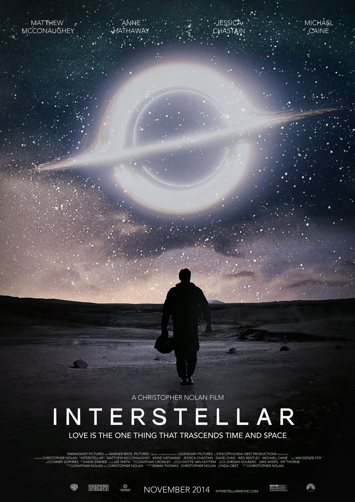
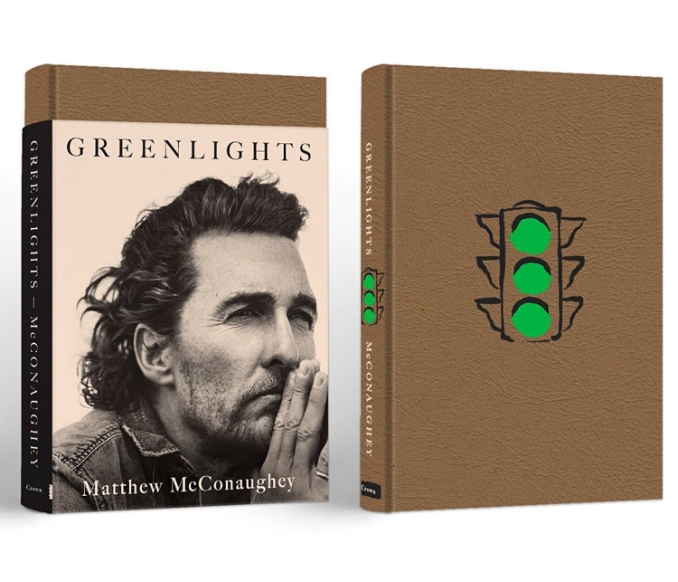

Мэтью Макконахи
Биография
Мэттью Дэвид МакКонахи родился 4 ноября 1969 года в техасском городке
Увалде. У актёра есть два старших брата. Мать Мэттью родом из штата
Нью-Джерси, она работала воспитательницей в детсаду. Отец Мэттью родом
из штата Миссисипи, он являлся профессиональным игроком в американский
футбол, а также наладил бизнес, связанный с поставкой труб для нефтепроводов.
Из-за своей привлекательности, в старших классах Мэттью был крайне популярен
у противоположного пола. Мэттью пользовался статусом этакого искусителя,
поэтому часто посещал различные вечеринки и ходил на свидания с самыми
красивыми девушками. В момент юноша решил поменять свой ловеласский
образ жизни и стал одержим кинематографом. Внезапное увлечение миром
кино позволило Мэттью определиться с выбором профессии. Так он поступает
в техасский институт на факультет коммуникаций и в 1993 году оканчивает
его по специальности «Радио, телевидение и кинематограф». Однако покорять
актёрский олимп Мэттью начал ещё в 1991 году во время обучения
в институте, но тогда он снимался в рекламных роликах и не самых
известных клипах.
5 лучших фильмов Мэттью Макконахи
-
Время убивать (1996 год)

Рейтинг КиноПоиск: 7,8
Рейтинг IMDb: 7,5
-
Линкольн для адвоката (2011 год)

Рейтинг КиноПоиска:7.7
Рейтинг IMDb:7.3
-
Далласский клуб покупателей (2013 год)

Рейтинг КиноПоиска:7.8
Рейтинг IMDb:8.0
-
Интерстеллар (2014 год)

Рейтинг КиноПоиска:8.6
Рейтинг IMDb:8.6
-
Джентльмены (2020 год)

Рейтинг КиноПоиска:8.5
Рейтинг IMDb:7.9
Интересные факты
-
Мэттью Макконахи родился 4 ноября 1969 года в Техасе и был младшим сыном в семье.
Его мать Мэри Кэтлин (в девичестве Макгейб) работала воспитательницей в детском
саду,позже стала писательницей. Его отец, Джеймс Дональд Макконахи был владельцем автозаправки.
Вырос в городе Лонгвью. Окончил школу в 1988 году и поступил в Техасский университет в Остине
c явным намерением стать адвокатом. Год учился в Австралии по программе обмена. Перед одним из
своих последних экзаменов он был вдохновлён книгой Ога Мандино «Лучший продавец в мире» и твёрдо
решил поменять специализацию с юриспруденции на кинематограф.
-
У него шотландские, английские, ирландские, шведские и немецкие корни.
-
В 1996-ом году Макконахи наконец получил главную роль в кинокартине «Время убивать».
Его партнёрами были Сэмюэл Л. Джексон, Сандра Баллок и Кевин Спейси. Как только фильм
вышел на экраны, на актёра обратили внимание многие режиссёры. Результатом этой работы
стала премия MTV Movie Awards. Надо сказать, что в 1996-ом году актёр появился ещё в
четырёх новых картинах – «Блеск славы», «Звезда шерифа», «Весна Скорпиона» и «Больше,
чем жизнь». Он получил роль в ставшем популярным фильме «Контакт». В этой
научно-фантастической картине Мэттью играл вместе с Джоди Фостер. В том же году актёр
снялся в «Амистаде». Этот фильм был снят Стивеном Спилбергом. Кроме Макконахи там снялись
и такие известные актёры, как Морган Фримен и Энтони Хопкинс.
-
Был первым, кого хотели взять на главную роль в фильме Титаник (1997). А Гвинет Пэлтроу
рассматривалась на роль Роуз. Роль в результате досталась Леонардо Ди Каприо и Кейт Уинслет.
-
Он принципиально не признает ни дезодоранта, ни одеколона. Хотя это не помешало "D&G" пригласить
Мэттью сняться в рекламе мужского аромата (которую, кстати, снимал Мартин Скорсезе).
-
С каждой следующей ролью слава Мэттью продолжала расти. В 1998-ом вышла кинолента «Братки Ньютоны»,
«Мятежник» и «Делая сэндвичи». Через год он появился в фильме «Эд из телевизора». Далее следовала
работа в «Ю-571», а через год в «Свадебном переполохе» и так далее.
-
У актёра есть собственная производственная компания «j.k. livin». Расшифровка названия звучит, как
«Просто продолжай жить». Эту фразу Макконахи считает своим лозунгом. С тем же названием им создан
благотворительный фонд, цель которого – оказание помощи подросткам в выборе правильного жизненного пути.
-
В 1994 молодой актёр появился на экранах в «Техасской резне бензопилой-4». Притом что этот фильм ужасов
среди молодёжи был очень популярен, особой известности начинающему актёру он не принёс.
-
Сейчас ММ женат на бразильской модели Камиле Алвес. У пары трое детей: дочь Вида и сыновья Леви и Ливингстон.
Как-то Макконахи, находясь в Лос-Анджелесе, оказался в одном из ресторанов, где предлагали кубинскую кухню.
В это время там был банкет в честь некоей модели Камиллы Альвес, в которую Макконахи влюбился. Они начали
встречаться, а спустя полтора года у них появился сын Леви. Это было лето 2008-го года. Только когда Камилла
забеременела в третий раз, он наконец-то сделал ей предложение. Свадебная церемония прошла летом 2012-го
года в поместье актёра в Техасе.
Книга Мэттью Макконахи "Зелёный свет"

Описание
Описание
Впервые на русском — одно из главных книжных событий 2020 года, «Зеленый свет» знаменитого
Мэттью Макконахи (лауреат «Оскара» за главную мужскую роль в фильме «Далласский клуб покупателей»,
Раст Коул в сериале «Настоящий детектив», Микки Пирсон в «Джентльменах» Гая Риччи) — отчасти
иллюстрированная автобиография, отчасти учебник жизни. Став на рубеже веков звездой романтических
комедий, Макконахи решил переломить судьбу и реализоваться как серьезный драматический актер.
Он рассказывает о том, чего ему стоило это решение — и другие судьбоносные решения в его жизни:
уехать после школы на год в Австралию, сменить юридический факультет на институт кинематографии,
три года прожить на колесах, путешествуя от одной съемочной площадки к другой на автотрейлере в
компании дворняги по кличке Мисс Хад, и главное — заслужить уважение отца …
Итак, слово — автору: «Тридцать пять лет я осмысливал, вспоминал, распознавал, собирал и записывал то,
что меня восхищало или помогало мне на жизненном пути. Как быть честным. Как избежать стресса. Как
радоваться жизни. Как не обижать людей. Как не обижаться самому. Как быть хорошим. Как добиваться
желаемого. Как обрести смысл жизни. Как быть собой».
Купить
Ссылки
На сайте использована информация из Википедии, youtube и других интернет ресурсов. Сделано в 2022году.